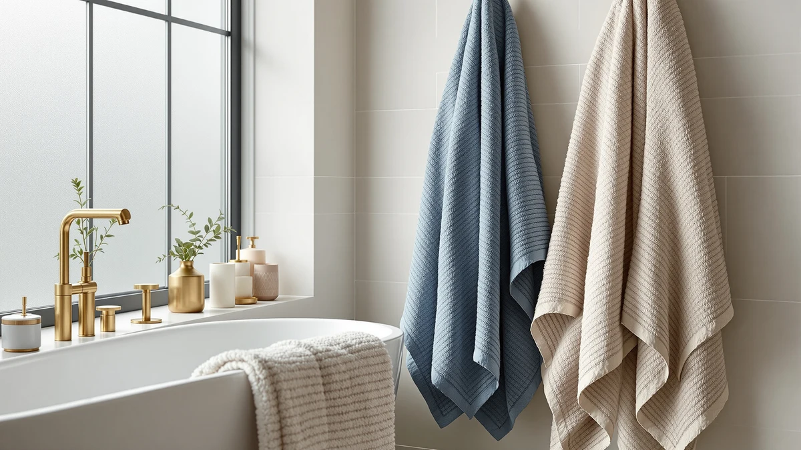

Texere 100% Organic Cotton Review (2026): Worth It?
Prices and picks verified as of October 2026. Independent, reader-supported reviews.


Quick Answer
The Texere 100% Organic Cotton Diamond set earns its $96.99 price through organic fiber sourcing and a diamond jacquard weave, the only set in this comparison that makes that organic claim. If organic sourcing matters less to you than price, Impressions' Luxury Heavyweight Egyptian Cotton set gets you into heavyweight cotton for $90.90, and BAGNO MILANO's Turkish Cotton Bath set comes in lowest at $79.95.
Our pick: Texere 100% Organic Cotton Diamond, $96.99 Check Price on Amazon
Bottom line: our top pick is the Texere 100% Organic Cotton Diamond Jacquard Luxury Bath Towel at $96.99.
Things to Know Before You Buy
- Texere sells this set as a six-piece 100% organic cotton bundle for $96.99, the highest price among the four towels in this comparison.
- The "Diamond" name points to a jacquard-style weave pattern, a texture detail layered on top of the organic cotton fiber itself.
- Impressions' Egyptian cotton listings and BAGNO MILANO's Turkish cotton set both undercut this price, by $6.09 and $17.04 respectively.
- We didn't run these towels through a testing lab. This texere 100% organic cotton review compares listed materials, pricing, and verified buyer feedback instead.
- Organic cotton describes how the fiber is grown, not an automatic guarantee of extra softness. The diamond weave is the separate factor that shapes how this set actually feels.
This texere 100% organic cotton review looks at whether a $96.99 six-piece organic towel set earns its premium over three heavyweight cotton alternatives priced between $79.95 and $90.90. Bath towels rarely fail outright, so most buyers aren't really weighing quality against junk. They're deciding whether organic fiber sourcing and a diamond weave justify paying more than a standard Egyptian or Turkish cotton set would cost. Organic cotton describes how the fiber is farmed, grown without synthetic pesticides, rather than a guarantee of a plusher feel on its own. That distinction matters here. The diamond weave is what gives this set its texture, while the organic label mainly describes how the fiber was grown.
Our read after comparing specs, pricing, and owner feedback across all four sets: Texere's organic cotton positioning is a real differentiator rather than marketing language alone, and it's the right pick if sourcing matters to you as much as feel does. If you mainly want a heavyweight towel at the lowest price, BAGNO MILANO's Turkish Cotton Bath set saves you $17.04 without asking you to give up much in daily use. Either way, the $96.99 to $79.95 range in this comparison gives you room to pick based on what you actually value: sourcing, weave, or price.
Why You Should Trust Us
Ilane Tall covers bath textiles for Best Bath Towels and has spent years comparing cotton weights, weave types, and sourcing claims across hundreds of Amazon listings. We don't own a testing lab and don't claim to have washed and dried every towel in this article ourselves. Instead, we research manufacturer specs, track pricing, and read through verified buyer reviews to flag patterns, like recurring praise for softness or complaints about shrinkage, that a spec sheet alone won't show. This texere 100% organic cotton review draws on that same process.
We also disclose upfront that this article contains affiliate links, and we earn a commission if you buy through them. That doesn't change which set we recommend. Our incentive is the same whether you buy the $96.99 Texere set or a cheaper alternative, so the recommendation here is based on which towel fits which buyer, not which one pays the highest commission. We update pricing and availability on this page when a listing changes, and we note that in the article's last-updated date rather than leaving outdated numbers in place. If a price shifts significantly after publishing, the dollar comparisons in this texere 100% organic cotton review may lag the live listing by a few dollars until our next pass.
How We Compared
For this texere 100% organic cotton review, we skipped the lab and compared Texere's stated material, weave, and price against three direct competitors: two Impressions Egyptian cotton listings and one Turkish cotton set from BAGNO MILANO. We looked at how each brand frames its cotton sourcing, whether buyers confirm those claims in verified reviews, and how the price stacks up once you weigh organic sourcing against plain Egyptian or Turkish cotton. That approach won't catch every edge case, but it surfaces the tradeoffs that matter before you spend $96.99 on organic cotton towels.
Price-per-set is straightforward to compare since all four listings give a flat price, but piece count isn't consistent across brands. Texere's $96.99 covers six pieces, while the comparison prices for Impressions and BAGNO MILANO reflect their own listed set sizes rather than a matched piece count. That means the headline price gap, $6.09 to $17.04, isn't a perfect apples-to-apples read, and we call that out rather than let the raw numbers imply more than they do.
Overview & Specs

Texere 100% Organic Cotton Diamond
What we like
- 100% organic cotton construction, the only set in this comparison that makes that sourcing claim
- Diamond jacquard weave adds a textured finish that the plain Egyptian and Turkish cotton towels in this lineup don't advertise
- Six-piece count gives you a fuller bundle in one purchase than a single-item or two-item alternative
Flaws but not dealbreakers
- At $96.99, it's the most expensive set in this comparison, costing $17.04 more than BAGNO MILANO's Turkish cotton set
- The organic claim isn't broken out with a third-party certification on the listing, so you're relying on Texere's own labeling rather than an independently verified seal
| Material | 100% cotton |
| Size | 6 Piece |
Texere built this set around two claims: organic cotton sourcing and a diamond-pattern weave. The "6 Piece" listing means you're buying a fuller bundle in one purchase, which is worth weighing alongside the $96.99 price tag before you compare it against the single-item alternatives in this review. The "Diamond" branding points to a jacquard-style texture layered on top of the organic fiber itself, a finish detail that none of the three competitors in this comparison advertise by name.
The organic cotton angle is the bigger differentiator here. Buyers who care about how their cotton is grown as much as how it feels are the ones most likely to find this texere 100% organic cotton review's top pick worth the premium over Impressions' Egyptian cotton or BAGNO MILANO's Turkish cotton. If that sourcing story doesn't move you and you mainly want the lowest price for a comparable cotton towel, the math works against Texere, since it's priced above every alternative in this lineup.
At $96.99 for six pieces, this set works out to roughly $16.17 per piece, a number worth keeping in mind if you're used to comparing towels on a per-item basis rather than per bundle. That math only tells part of the story, since the organic sourcing and diamond weave are the features Texere is actually charging for, not the piece count on its own.
What We Liked
The clearest strength in this texere 100% organic cotton review is the sourcing claim itself: this is the only set among the four we compared that's marketed as 100% organic cotton. For buyers who've started paying attention to how cotton is grown as much as how a towel feels out of the package, that distinction carries real weight, even before you factor in the diamond weave layered on top of it.
The six-piece count is also a practical plus. You're not stuck buying a second product to round out a bathroom the way you might with a smaller set, and getting more pieces in one purchase simplifies the decision if you need to outfit more than one bathroom at once.
Buyers shopping specifically for organic cotton tend to have already ruled out conventional cotton on principle, and for that audience, Texere is the only option in this four-way comparison that matches what they're looking for. That narrows the real competition to a question of whether the diamond weave and six-piece count are worth the $96.99 price, not whether organic sourcing itself is worth paying for.
What Could Be Better
Price is the honest tradeoff in this texere 100% organic cotton review. At $96.99, this set costs more than every alternative we compared, including a $17.04 gap over BAGNO MILANO's Turkish cotton set and a $6.09 gap over either Impressions Egyptian cotton listing. You're paying a real premium for the organic sourcing and the diamond weave, and if neither of those matters much to you, that premium buys you less practical value than a cheaper cotton set.
The listing also doesn't spell out a third-party organic certification, so the organic claim rests on Texere's own labeling rather than an independently verified seal. That's not unusual for cotton towels at this price point, but it's worth knowing before you pay extra specifically for the organic story.
The listing also doesn't specify care instructions or expected shrinkage after washing, details that can matter more for organic cotton than for conventionally treated cotton. Until more verified buyer feedback accumulates on long-term wear, treat the organic and diamond-weave claims as the main reasons to choose this set rather than as settled facts about how it holds up over years of use.
Who Is It For?
This Texere set makes the most sense for buyers who specifically want organic cotton sourcing and are comfortable paying $96.99 to get it, along with the textured feel of a diamond weave. It also fits households that would rather buy one larger six-piece bundle than piece together towels from multiple purchases.
If organic sourcing isn't a priority and you mainly want a heavyweight cotton towel at the lowest price in this comparison, BAGNO MILANO's Turkish Cotton Bath set at $79.95 covers the same basic job for $17.04 less.
Buyers who should skip this set are the ones mainly comparing towels on price per piece or price per bathroom outfitted. At roughly $16.17 per piece, Texere's six-piece set isn't the cheapest way to stock a bathroom, and BAGNO MILANO's $79.95 Turkish cotton set or either Impressions Egyptian cotton listing at $90.90 will stretch a towel budget further if organic sourcing isn't the deciding factor for you.
Alternatives to Consider
If the Texere set's $96.99 price or its organic-only angle doesn't fit what you're looking for, these three cotton towels cover similar ground at different price points.

Editor's Pick
Impressions Luxury Heavyweight Egyptian Cotton
A heavyweight Egyptian cotton option at $90.90 if organic sourcing matters less to you than fiber weight.
$90.90
Check Price on Amazon
Best Value
Impressions Luxury Heavyweight Egyptian Cotton
The same Egyptian cotton positioning as our Editor's Pick, in case this listing has stock when the other doesn't.
$90.90
Check Price on Amazon
Premium Choice
BAGNO MILANO Turkish Cotton Bath
The lowest price in this comparison, at $79.95, for a Turkish cotton set if you want a different sourcing story than Egyptian or organic cotton.
$79.95
Check Price on AmazonIs the Texere 100% Organic Cotton Diamond towel set worth $96.99?
It depends on what you're comparing it to.
How does the Texere organic cotton set compare to Impressions and BAGNO MILANO on price?
The Texere set costs $96.99, while Impressions' Luxury Heavyweight Egyptian Cotton listings run $90.90 and BAGNO MILANO's Turkish Cotton Bath set comes in at $79.95.
Frequently Asked Questions
Is the Texere 100% Organic Cotton Diamond towel set worth $96.99?
How does the Texere organic cotton set compare to Impressions and BAGNO MILANO on price?
What's included in the Texere 100% Organic Cotton Diamond six-piece set?
Final Verdict
This texere 100% organic cotton review comes down to a straightforward tradeoff: pay $96.99 for TexereSilk's only organic cotton set in this lineup, complete with a diamond weave finish, or save $6.09 to $17.04 with Impressions' Egyptian cotton or BAGNO MILANO's Turkish cotton alternatives and accept a conventional cotton sourcing story. Texere earns its price for buyers who specifically want organic fiber and don't mind paying the highest price in this comparison to get it. If sourcing isn't a priority and you're mainly after a heavyweight cotton towel, BAGNO MILANO's Turkish Cotton Bath set covers the same basic job for less. Either way, comparing all four prices side by side, from $79.95 to $96.99, should make the decision easier than reading four separate listings on Amazon.